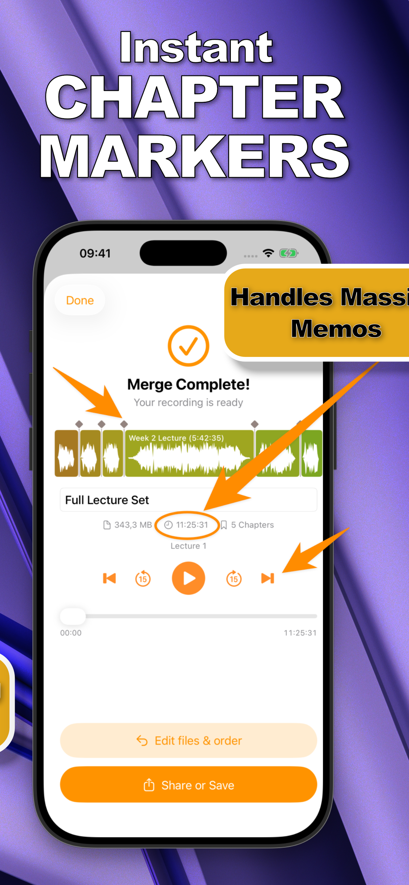

Plenty of podcasts are recorded entirely on a phone: solo commentary in a parked car, interviews over lunch, voice notes that become segments. The bottleneck was never recording — it's that assembling segments into an episode traditionally meant a desktop DAW.
If your episodes are cut-together segments rather than multitrack productions, you can merge podcast recordings on the iPhone itself and publish the same hour.
Podcast Assembly Without a Desktop
An episode is usually a sequence: cold open → intro → interview part one → part two → outro. That's not mixing; that's ordering. SmartMerge does exactly that step — drag the segments into sequence, trim the edges automatically, and export one continuous file with no quality loss for your host to ingest.
Assemble an Episode on iPhone (Step by Step)
- Record segments as separate memosKeep the cold open, ad read, interview, and outro as individual recordings — separate takes are easier to redo than one long one.
- Share the segments to SmartMergeSelect them all in Voice Memos (or Files, for M4A/WAV from other recorders) and choose “Merge with SmartMerge” from the share sheet.
- Sequence the episode and Auto-TrimDrag segments into episode order. Auto-Trim cuts 2, 3, or 5 seconds from each segment's edges — the breath before you start talking, the tap at the end.
- Merge and export for publishingTap Merge and export one continuous, chaptered episode file — share it straight to your podcast host or save it for artwork and show notes.

Chapters Your Listeners Can Actually Use
Because SmartMerge tags where each merged segment begins, your episode structure becomes navigation: listeners skip the ad read, jump to the interview, replay the outro CTA. See how chapter markers work.
Keep the Audio Broadcast-Ready
Merging is the wrong place to lose quality. SmartMerge joins M4A and WAV segments without re-encoding artifacts, and its crash-free engine handles long-form shows — a 4-hour actual-play episode merges as reliably as a 10-minute daily.
Try it on your own recordings
SmartMerge is free to download with a fully unlocked 3-day free trial — merge your first files in the next two minutes.
Get SmartMerge on the App Store